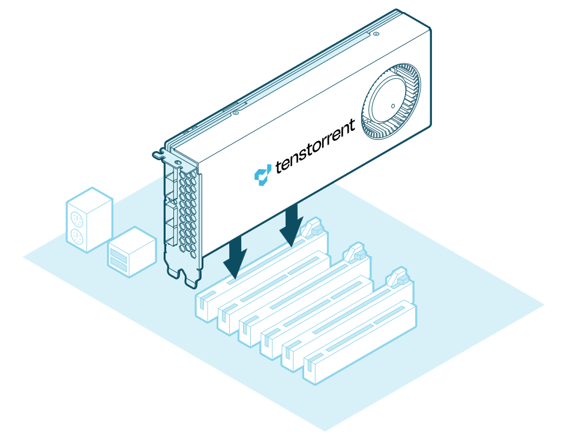
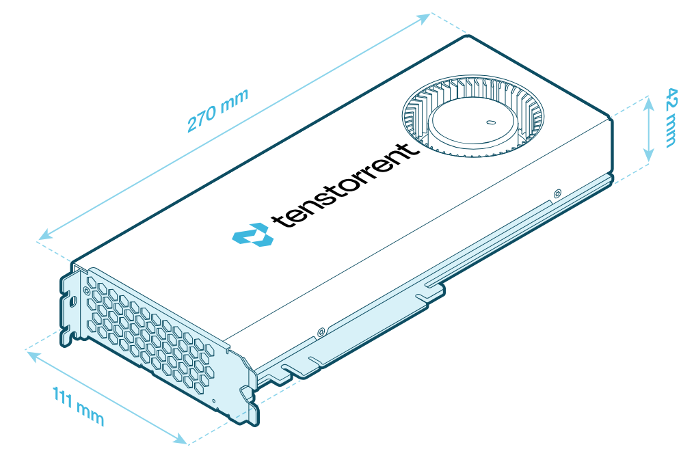
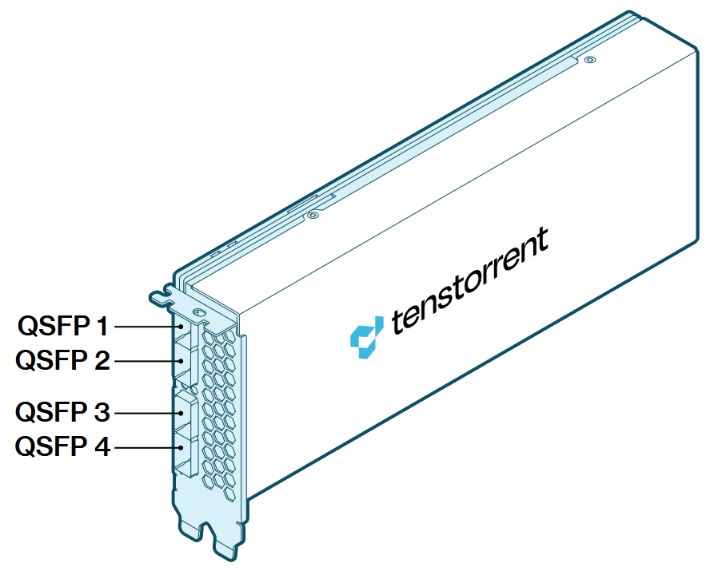

Blackhole™ PCIe Cards
This page covers everything for Tenstorrent Blackhole™ PCIe cards: how to install and connect them, their full hardware specifications, and answers to common hardware questions. Use the page navigation on the right to jump between sections.
Hardware Installation
This document guides system administrators and users through the process of physically installing and connecting Tenstorrent Blackhole™ p100a, Blackhole™ p150a, and Blackhole™ p150b add-in boards into a host system. You will learn the necessary pre-installation steps, installation procedures for desktop workstations, and how to connect power.
Pre-Installation
Before you begin the installation process, complete the following steps:
Disconnect power from the host computer.
Verify that your system meets the following requirements:
PCI Express 5.0 x16 slot: For optimal performance, the board requires a x16 configuration without bifurcation.
Blackhole™ p100a and Blackhole™ p150a products are dual-slot width boards with active coolers. Tenstorrent recommends leaving the adjacent slot unoccupied to ensure optimal airflow.
Blackhole™ p150b is a dual-slot width board with a passive heatsink, designed for rack-mounted systems with sufficient active airflow.
Warning
An ATX 3.1 Certified power supply or better is required. Using an older or inadequate power supply may result in system instability.
One (1) 12+4-pin 12V-2x6 power connector.
Note
If your PSU does not have this connector available, see the FAQ and Troubleshooting section to determine which adapter to use.
Discharge static electricity from your body by wearing an ESD wrist strap (recommended) or by touching a grounded surface before touching system components or the add-in board.
Desktop Workstation Installation (p100a/p150a)
Note
Images shown might not fully represent your specific system configuration.
Insert the Blackhole™ add-in board into the PCIe x16 slot and secure it with the necessary screws. (A Blackhole™ p150a is pictured below for reference.)

Connecting Power
Connect a 12+4-pin 12V-2x6 power cable to the plug on the back of the add-in board.
Important
Ensure the power cable is fully and securely connected to prevent instability or damage.

Software Setup
For instructions on how to set up software for your Blackhole™ p100a, Blackhole™ p150a, or Blackhole™ p150b, refer to the Installing the Tenstorrent Software Stack guide.
Need Additional Support?
If you encounter any issues, or have a question that isn’t covered in the documentation, please raise a support request. Our team will review your request and provide assistance.
Specifications and Requirements
This document provides detailed technical specifications for the Tenstorrent Blackhole™ Tensix Processor and its associated add-in boards. It is intended for users, system integrators, and developers who require precise information about the hardware capabilities and system requirements for deploying Blackhole-based solutions.
Blackhole™ Tensix Processor Overview
The Tenstorrent Blackhole™ Tensix Processor powers the Blackhole™ p100a, p150a, and p150b cards. The processor features:
Tensix core count: 120
SiFive x280 “Big RISC-V” cores: 16
SRAM: 180 MB (1.5 MB per Tensix core)
Memory: up to 32 GB GDDR6 with a 256-bit memory bus
Card Comparison Table
Note
The p100a and p150a cards are designed for desktop workstations where active cooling is required. For rack-mounted servers with sufficient forced air cooling, use the p150b card.
Specification |
p100a |
p150a |
p150b |
|---|---|---|---|
Part Number |
TC-03008 |
TC-03003 |
TC-03002 |
Tensix Cores |
120 |
120 |
120 |
AI Clock |
Up to 1.35 GHz |
Up to 1.35 GHz |
Up to 1.35 GHz |
“Big RISC-V” Cores |
16 |
16 |
16 |
SRAM |
180 MB |
180 MB |
180 MB |
Memory |
28 GB GDDR6 |
32 GB GDDR6 |
32 GB GDDR6 |
Memory Speed |
16 GT/sec |
16 GT/sec |
16 GT/sec |
Memory Bandwidth |
448 GB/sec |
512 GB/sec |
512 GB/sec |
TeraFLOPS (BLOCKFP8) |
664 |
664 |
664 |
TBP (Total Board Power) |
300W |
300W |
300W |
External Power |
1x 12+4-pin 12V-2x6 |
1x 12+4-pin 12V-2x6 |
1x 12+4-pin 12V-2x6 |
Power Supply Requirements |
ATX 3.1 Certified or better |
ATX 3.1 Certified or better |
ATX 3.1 Certified or better |
Connectivity |
- |
4x QSFP-DD 800G (Passive)* |
4x QSFP-DD 800G (Passive)* |
System Interface |
PCI Express 5.0 x16 |
PCI Express 5.0 x16 |
PCI Express 5.0 x16 |
Cooling |
Active |
Active |
Passive |
Dimensions (WxDxH) |
42mm x 270mm x 111mm |
42mm x 270mm x 111mm |
42mm x 270mm x 111mm |
*For connecting to Tenstorrent Blackhole™-based cards only.
Card Dimensions
p100a

p150a

p150b

Connectivity (p150a/p150b)
Blackhole™ PCIe cards feature four QSFP-DD ports for connecting to other cards. (p150b pictured; p150a will have the same ports.)

Each of the four passive QSFP-DD ports provides 800 Gbps connectivity and supports cable lengths of up to 2 meters (6.5 feet). These ports connect exclusively to other Blackhole™-based add-in cards.
Supported Data Precision Formats
The Blackhole™ Tensix Processor supports the following data precision formats:
Format |
Bit Depth (Tensix Cores) |
Bit Depth (Big RISC-V Cores) |
|---|---|---|
Floating point |
FP8, FP16, BFLOAT16 |
FP8, FP16, BFLOAT16, FP32, FP64 |
Block floating point |
BLOCKFP2, BLOCKFP4, BLOCKFP8 |
- |
Integer |
INT8 |
INT8, INT16, INT32, INT64 |
Unsigned Integer |
UINT8 |
- |
TensorFloat |
TF32 |
- |
Vector |
VTF19, VFP32 |
VFP64 |
Minimum System Requirements
Part |
Requirement |
|---|---|
CPU |
x86_64 architecture |
Motherboard |
PCI Express 5.0 x16 slot |
Memory |
64 GB |
Storage |
100 GB (≥2 TB recommended) |
Power Connectors |
12+4-pin 12V-2x6 |
Total Board Power |
Up to 300W |
Power Supply |
ATX 3.1 Certified or better |
Operating System |
Ubuntu version 22.04 (Jammy Jellyfish) |
Internet Connection |
Required for driver and stack installation. |
Environment Specifications
The Blackhole™ Tensix Processor cards are designed to meet these environmental specifications:
Specification |
Requirement |
|---|---|
Operating Temperature Range |
10°C/50°F - 35°C/95°F |
Storage Temperature Range |
-40°C/-40°F - 75°C/167°F |
Elevation |
-5 ft. to 10,000 ft. |
Air Flow |
≥30 CFM @ up to 35°C/95°F |
FAQ and Troubleshooting
This document assists Tenstorrent users in resolving common issues encountered with Blackhole™ AI Processors. It provides solutions and directs users to appropriate support resources.
How do I choose between the Tenstorrent Blackhole™ p100a/p150a/p150b?
p100a: This card is the economical entry point in the Blackhole™ product stack and exists for users looking to evaluate Tenstorrent technology. It features 28 GB of GDDR6 and an active cooling solution that conforms to industry PCI specifications, and is intended for single card operation in conventional desktop systems.
p150a: This card provides additional local memory (32 GB) compared to p100a and slightly higher compute density. It also features four passive 800 Gbps QSFP-DD ports used for networking with other Tenstorrent Blackhole™ p150a/p150b cards. It features an active cooling solution that conforms to industry PCI specifications, and is intended for single- or multi-card operation in conventional desktop systems.
p150b: This card features identical specifications to p150a, but features a passive cooling solution that conforms to industry PCI specifications, and is intended for single- or multi-card operation in rack-mounted servers with existing high static pressure, forced air cooling.
What PSU and Connector should I use to connect my Blackhole card?
Tenstorrent Blackhole cards use a 12V-2x6 (12+4-pin) power connector and are designed for use with ATX 3.1-certified or newer Power Supply Units (PSUs). Native PSU support via a 12V-2x6 connector is the recommended configuration.
Never use an ATX 2.0 or older PSU.
My PSU doesn’t have a 12V-2x6 (12+4-pin) power connector available. What adapter should I get for my Blackhole card?
If a native 12V-2x6 connector is not available, Blackhole cards may be powered using a PSU-manufacturer-approved adapter that combines standard 8-pin PCIe and/or EPS 4+4-pin connectors, provided the combined power delivery meets the card’s total power requirements and the PSU is ATX 3.1 certified or better. Each input cable must be connected to a separate PSU output.
The Blackhole cards require 300W of power to function. Ensure that the combination of PSU outputs meets this requirement, and that the total load on your PSU does not exceed the total PSU output power.
To ensure electrical compatibility and prevent hardware damage, only power cables and adapters supplied or explicitly approved by the PSU manufacturer should be used. Many PSU manufacturers key the connectors so that only their power connector works. The power connector must be fully seated, and tight bends near the connector should be avoided.
Use of older 12VHPWR cables is not recommended, even though they are physically compatible with the 12V-2x6 connector. The 12V-2x6 standard replaced 12VHPWR to reduce the risk of overheating (and melting) associated with improper connector seating.
Which QSFP cable(s) should I purchase for my Tenstorrent Blackhole™ cards?
For standard short-reach setups, validated 0.5m QSFP cables are available directly on the Tenstorrent store hardware cards page.
If you need 1m cables, we recommend either Amphenol 1m (3.3 ft.) 800G Passive QSFP-DD (SF-NJYYEK0001-001M) or FS 1m (3 ft.) 800G Passive QSFP-DD (QDD-800G-PC01).
The idle power consumption of my Tenstorrent Blackhole™ card seems high
Blackhole™ AI Processors typically consume approximately 120W at idle. When measuring power at the wall, you might observe a higher power draw because the power supply converts AC current from the wall to DC current within the system, resulting in some expected loss.
Tenstorrent is exploring methods to further optimize idle power consumption through firmware updates and in future products.
The temperatures reported by my Tenstorrent Blackhole™ card seem high
The Blackhole AI Processor is designed to operate safely and continuously at temperatures up to 95°C, even if the ASIC temperature appears high. Existing cooling solutions maintain the Blackhole AI Processor chip, power circuitry, and memory ICs within safe operating specifications. The card automatically reduces clock speeds to prevent overheating.
Tenstorrent is exploring methods to further optimize default operation through firmware updates and in future products.
The fan noise of my Tenstorrent Blackhole™ p100a/p150a card is too quiet/too loud
Tenstorrent has received varied feedback regarding fan noise levels. Some users express concern about the noise level of their p100a or p150a models, while others prefer to tolerate increased noise to achieve lower idle and operating temperatures.
Tenstorrent is evaluating the addition of end-user fan controls in a future update.
What do I do if my Tenstorrent Blackhole™ card is not enumerating?
Blackhole™ PCIe cards are designed to operate using PCI Express Gen 5.0. However, Tenstorrent has observed instances where some motherboards set PCIe operation to Auto (often by default), which can prevent the card from enumerating. You can often resolve these issues by manually forcing PCIe operation to Gen 4.0 or Gen 5.0 in the BIOS.
Important
Once you successfully enter an operating environment where the card has enumerated, ensure that you update to the latest firmware. Refer to the Installing the Tenstorrent Software Stack guide.
How can I demonstrate the networking ability of my Tenstorrent Blackhole™ cards? How can I test multiple cards together?
Setting up the Llama 3.1 8B model demo (instructions here) is a useful way to test that your networked Blackhole™ cards are functioning as intended.
Need Additional Support?
If you encounter any issues, or have a question that isn’t covered in the documentation, please raise a support request. Our team will review your request and provide assistance.